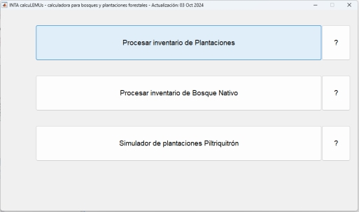

El procesamiento de
los datos de plantaciones comienza con la selección de la
correspondiente opción de la consola.

A continuación
se abre un cuadro de diálogo para seleccionar el archivo de
datos en formato xls
Mientras se carga
el archivo de datos se muestra una barra de avance.
calcuLEMUs consulta
si se quiere visualizar los gráficos, en caso de respuesta
negativa, se pasa directamente al procesamiento de datos y la
generación de los parámetros de rodal.
A continuación
se muestra un cuadro diálogo donde se consulta si se quiere
visualizar el gráfico del árbol trozado. Este consiste en
mostrar un dibujo a escala de cada árbol presente en el
archivo de datos y la representación de los productos
obtenidos de acuerdo a la Definición
de productos de trozado.
Si la respuesta es afirmativa es necesario presionar ENTER para
pasar de un árbol a otro.
En caso afirmativo,
el procesamiento avanza mostrando los gráficos de
relación Altura total - Dap, y la distribución del
número de árboles por clase diamétrica. Si no
existen datos de altura entoces solo se produce el histograma.
Previamente es necesario definir el intervalo de clase
diamétrica, que por defecto es de 50 mm.
También se
solicita ingresar el diámetro en punta fina, que por defecto
es de 150 mm. Este se emplea para estimar el volumen del fuste
desde el suelo hasta ese diámetro de punta fina. Este volumen
se estima mediante una razón de volumen que multiplica a la
función de volumen bruto individual de la
especie.
En el gráfico
de Altura total - Dap puede verse los valores observados, la
tendencia ajustada con los valores observados, los valores
estimados con la tendencia, y la altura dominante de acuerdo a
Asmann (1970). Además se presenta un gráfico de
distribución del número de árboles por clase
diamétrica y estado. Además se graba en un archivo excel
los valores correspondientes a esta distribución del
número de árboles.